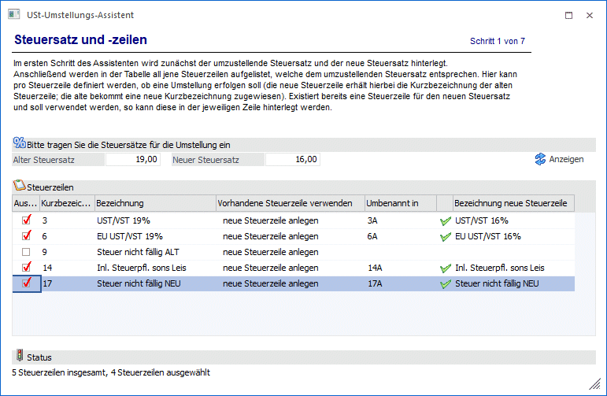
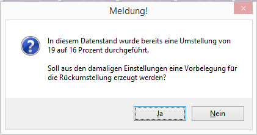
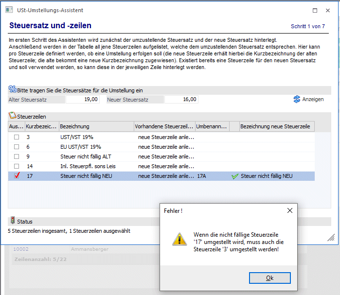
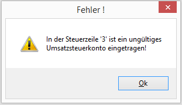
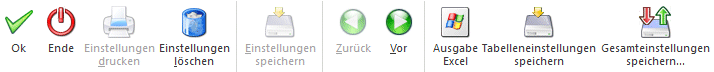

Sichern Sie die Daten, bevor Sie den Assistenten verwenden!
Im ersten Schritt des Assistenten werden zunächst der umzustellende Steuersatz und der neue Steuersatz hinterlegt.
Sollten bereits Umstellungen (z.B. von 19% wurde auf 16% umgestellt) über den Assistenten vorgenommen worden sein, wird bei einer Rückumstellung (16% auf 19%) der Steuersätze eine Meldung ausgegeben. Bei der Meldung können die Einstellungen aus der Umstellung (19% auf 16%) geladen werden. Oder beim Bestätigen der Meldung mit Nein sind die Einstellung selbst vorzunehmen.

Anschließend werden über den Anzeigen-Button in der Tabelle all jene Steuerzeilen aufgelistet, welche dem umzustellenden Steuersatz entsprechen.
Hier kann pro Steuerzeile definiert werden,
ü ob eine Umstellung erfolgen soll. Die neue Steuerzeile erhält hierbei die Kurzbezeichnung der alten Steuerzeile (und natürlich eine neue "interne Nummer"); die alte Steuerzeile bekommt eine neue Kurzbezeichnung zugewiesen. Vorgeschlagen wird hier die alte Kurzbezeichnung + "A" (aus "3" wird "3A"). Die Kurzbezeichnung kann noch editiert werden. Weiters wird die Bezeichnung der neuen Steuerzeile vorgeschlagen, wobei hier einfach die Bezeichnung der alten Steuerzeile übernommen und der alte Steuerprozentsatz durch den neuen Steuerprozentsatz ersetzt wird. Auch diese Bezeichnung kann noch editiert werden.
ü oder eine für den neuen Steuersatz bereits existierende Steuerzeile verwendet werden soll. Diese kann in der jeweiligen Zeile hinterlegt werden. In diesem Fall wird keine neue Steuerzeile angelegt, sondern die vorhandene Steuerzeile verwendet.
Status
Unterhalb der Tabelle existiert eine Statuszeile, welche die Eingaben des aktuellen Schrittes zusammenfasst.
Steuerzeile "nicht fällige Ust"
Bei einer Steuerzeile mit aktiviertem Kennzeichen "nicht fällige Ust" muss auch die Steuerzeile, die unter "fällige Ust (Steuerzeile)" eingetragen ist, mit umgestellt werden.

Sollten bei einer Steuerzeile ungültige Steuerkonten hintelegt sein, wird dies beim Wechsel zum Schritt 2 des Assistenten geprüft und mit einer Meldung in welcher Steuerzeile betroffen sit ausgegeben.

Buttons

Ø Ok
Über den Button Ok" gelangt man sofort in den letzten Schritt des Assistenten.
Ø Ende
Durch Drücken des Buttons "Ende" bzw. der Taste ESC wird das Fenster geschlossen.
Ø Einstellungen löschen
Über den Button "Einstellungen löschen" werden gespeicherte Einstellungen gelöscht.
Ø Vor
Durch Anwahl des Buttons "Vor" kann in den nächsten Schritt des Assistenten gewechselt werden.
Ø Ausgabe Excel
Durch Anwahl des Buttons "Ausgabe Excel" wird der Inhalt der Tabelle an Microsoft Excel übergeben.
Ø Tabelleneinstellungen speichern
Die Spalten einer Tabelle können grundsätzlich an beliebige Positionen verschoben, bzw. in der Breite entsprechend angepasst werden. Durch Anwahl des Buttons "Tabelleneinstellungen speichern" werden die Einstellungen benutzerspezifisch gespeichert und bei dem nächsten Aufruf des Programmpunktes wieder vorgeschlagen.
Ø Gesamteinstellungen speichern
Im Gegensatz zu "Tabelleneinstellungen speichern" können mit "Gesamteinstellungen speichern" mehrere Tabellenaufbauten gespeichert und nach Wunsch geladen werden. Zusätzlich werden Sonderfunktionen der Tabelle (z.B. "Spalte gruppieren") ebenfalls bei der Speicherung bedacht.